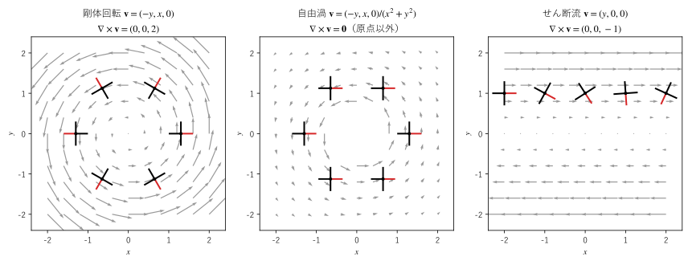

第 7 章 回転
回転は、ベクトル場の「渦」の強さと軸の向きを表すベクトル場である。この章では、微小な長方形を一周する循環から回転を導き、剛体回転、自由渦、せん断流の 3 つの例で、見た目の渦と回転が一致しない場合があることを示す。
渦と羽根車
川の流れに、小さな羽根車を軸が水面に垂直になるように浮かべることを考える。羽根車は流れに運ばれるだけでなく、場所によってはその場で自転する。羽根車の両側で流れの速さが違えば、速い側の羽根が強く押されて羽根車は回り出す。
この「羽根車を回そうとする働き」を数量化したものが、この章で扱う回転（rotation、curl）である。回転を調べるには、小さな閉曲線に沿って流れがどれだけ一周しようとしているかを測ればよい。
循環
向きの付いた閉曲線 \(C\) に沿ってベクトル場 \(\bm{F}\) を足し合わせた量を考える。曲線を小さな線分 \(\Delta\bm{r}_1, \Delta\bm{r}_2, \ldots\) に分け、各線分での \(\bm{F}\) との内積を合計する。
線分を細かくした極限を閉曲線に沿った線積分 \(\oint_C \bm{F} \cdot d\bm{r}\) といい、これを循環という。もとは \(\bm{F}\) が流れの速度の場合の呼び名だが、一般のベクトル場でも同じように呼ぶ。\(\bm{F}\) が曲線に沿って同じ向きに流れていれば循環は大きく、曲線に垂直な流れは循環に寄与しない。線積分の詳しい扱いは第 11 章で説明する。この章では、小さな長方形の 4 つの辺に沿った和だけを使う。
微小な長方形を一周する循環
まず 2 次元のベクトル場 \(\bm{F} = (F_x, F_y)\) で考える。点 \((x, y)\) を左下の頂点とし、辺の長さが \(\Delta x, \Delta y\) の小さな長方形を、反時計回りに一周する。各辺での \(\bm{F}\) の値を、辺の始点での値で代表させる。
辺 |
進む向き |
循環への寄与 |
|---|---|---|
下の辺 |
\(+x\) |
\(F_x(x, y) \, \Delta x\) |
右の辺 |
\(+y\) |
\(F_y(x + \Delta x, y) \, \Delta y\) |
上の辺 |
\(-x\) |
\(-F_x(x, y + \Delta y) \, \Delta x\) |
左の辺 |
\(-y\) |
\(-F_y(x, y) \, \Delta y\) |
上下の辺、左右の辺をそれぞれ組にすると、1 次近似から
となる。循環は長方形の面積に比例し、その比例係数
が、点 \((x, y)\) での「単位面積あたりの循環」である。右の辺で上向きの流れが強い（\(\partial F_y / \partial x > 0\)）か、下の辺で右向きの流れが強い（\(\partial F_x / \partial y < 0\)）と、反時計回りの循環が生じる。
回転の定義
3 次元のベクトル場 \(\bm{F} = (F_x, F_y, F_z)\) では、座標軸に垂直な 3 つの平面のそれぞれで、小さな長方形を考える。
\(z\) 軸に垂直な平面（\(xy\) 平面に平行）：上と同じ計算で \(\partial F_y / \partial x - \partial F_x / \partial y\)
\(x\) 軸に垂直な平面：\(x, y\) を \(y, z\) に置き換えて \(\partial F_z / \partial y - \partial F_y / \partial z\)
\(y\) 軸に垂直な平面：\(x, y\) を \(z, x\) に置き換えて \(\partial F_x / \partial z - \partial F_z / \partial x\)
ここで長方形を一周する向きは、その平面に垂直な座標軸の正の向きから見て反時計回りとする。右手の親指を座標軸の正の向きに向けたとき、残りの指が曲がる向きである（右ねじの規則）。
この 3 つを成分とするベクトル場を、\(\bm{F}\) の回転と定義する。
回転は \(\operatorname{rot} \bm{F}\) または \(\operatorname{curl} \bm{F}\) とも書く。ナブラと \(\bm{F}\) の形式的な外積の形をしており、外積と同じく行列式の形で覚えられる（第 2 章）。
この行列式は、1 行目について展開する。2 行目の偏微分は 3 行目の成分に作用させ、\(F_y \, \partial / \partial z\) のような順序には並べない。
2 次元のベクトル場 \((F_x, F_y)\) は、\(F_z = 0\) で \(F_x, F_y\) が \(z\) によらない 3 次元のベクトル場とみなせる。このとき回転は \((0, 0, \partial F_y / \partial x - \partial F_x / \partial y)\) となり、\(z\) 成分だけを持つ。2 次元では、この \(z\) 成分をスカラーとして「回転」と呼ぶことも多い。
回転の意味
回転のベクトルの向きと大きさは、次の意味を持つ。
任意の単位ベクトル \(\bm{n}\) を法線とする小さな平らな閉曲線（面積 \(\Delta S\)、向きは \(\bm{n}\) に対して右ねじの規則で決める）を一周する循環は、\((\nabla \times \bm{F}) \cdot \bm{n} \, \Delta S\) で近似できる。
したがって、\(\bm{n}\) を \(\nabla \times \bm{F}\) と同じ向きにとったとき、単位面積あたりの循環は最大になり、その値は \(|\nabla \times \bm{F}|\) である。
回転のベクトルの向きは渦の軸の向きを、大きさは渦の強さを表す。軸の向きは、渦の回る向きに対して右ねじの規則で決まる。
1 つ目の性質は、座標軸に垂直な 3 つの面の結果から、任意の向きの面に一般化したものである。その根拠は第 15 章のストークスの定理で与える。
羽根車との関係も述べておく。流体の速度場 \(\bm{v}\) の中に置いた小さな羽根車は、角速度 \(\tfrac{1}{2} \nabla \times \bm{v}\) で自転する。2 次元で理由を説明する。点 \((x, y)\) から \(x\) の向きに伸びる短い羽根は、先端と根元の \(y\) 方向の速度の差 \((\partial v_y / \partial x) \Delta x\) によって、角速度 \(\partial v_y / \partial x\) で反時計回りに回される。\(y\) の向きに伸びる羽根は、同様に角速度 \(-\partial v_x / \partial y\) で回される。羽根車の角速度は 2 つの平均
であり、回転の \(z\) 成分の半分になる。
回転の計算例
3 つの流れについて回転を計算し、羽根車の動きと比べる。図 10 は、羽根車が流れに運ばれる様子を、一定の時間間隔で描いたものである。羽根の 1 枚を赤くして、羽根車の向きが分かるようにした。


図 10 剛体回転、自由渦、せん断流に流される羽根車
剛体回転
円板が角速度 \(\omega\) で \(z\) 軸の周りに回るときの速度場 \(\bm{v} = (-\omega y, \ \omega x, \ 0)\) を剛体回転という。回転は
であり、どの点でも同じである。羽根車は角速度 \(\omega\) で自転し、円板と一緒に回る（図の左。\(\omega = 1\)）。羽根車が 1 周する間に、赤い羽根も 1 回転して常に外側を向く。
一般に、一定の角速度ベクトル \(\bm{\Omega}\) での剛体回転 \(\bm{v} = \bm{\Omega} \times \bm{r}\) の回転は \(2\bm{\Omega}\) であり、回転は角速度の 2 倍になる。上の例は \(\bm{\Omega} = (0, 0, \omega)\) の場合にあたる。
自由渦
速さが中心からの距離に反比例する渦 \(\bm{v} = \left( -\dfrac{y}{x^2 + y^2}, \ \dfrac{x}{x^2 + y^2}, \ 0 \right)\) を自由渦という。台風の外側や、浴槽の排水口の周りの流れが近い。回転の \(z\) 成分は
であり、原点以外の点で回転は \(\bm{0}\) である。流れは原点の周りを回っているのに、羽根車は自転しない（図の中央）。羽根車の外側の羽根は流れが遅く、内側の羽根は流れが速い。この速さの差が、流れが曲がっていることによる効果と打ち消し合う。
一方、原点を囲む円に沿った循環は 0 にならない。半径 \(a\) の円の上では速さが \(1/a\) で、流れは円に沿っているので、循環は \((1/a) \times 2\pi a = 2\pi\) である。回転が 0 なのに循環が 0 でないのは、原点で場が定義されないためである。この点は第 16 章で詳しく扱う。
せん断流
速度場 \(\bm{v} = (y, 0, 0)\) は、すべて \(x\) 軸に平行な流れで、上へ行くほど速い。このような流れをせん断流という。流線は直線で、渦があるようには見えない。しかし回転は
であり、0 ではない。羽根車の上側の羽根が下側の羽根より強く押されるため、羽根車は時計回り（\(z\) 軸の負の向きを軸とする向き）に角速度 \(1/2\) で自転する（図の右）。
3 つの例から、流れが円を描くことと回転が 0 でないことは別の性質だと分かる。回転は、流れ全体の形ではなく、各点の近くでの速度の差（偏微分）で決まる。
数値で確かめる
回転の \(z\) 成分が「単位面積あたりの循環」であることを数値で確かめる。点 \((1, 0.5)\) を中心とする 1 辺 \(h\) の正方形を反時計回りに一周する循環を、SciPy の integrate.quad で 4 つの辺ごとに数値積分し、面積 \(h^2\) で割る。上の 3 つの流れに加えて、一般のベクトル場 \(\bm{F} = (x \sin y, \ x^2 y, \ 0)\) でも計算する。
24def circulation_square(fx: Callable[[float, float], float], fy: Callable[[float, float], float],
25 cx: float, cy: float, h: float) -> float:
26 """中心 (cx, cy)、1 辺 h の正方形を反時計回りに一周する線積分（循環）を数値積分で求める."""
27 x0, x1, y0, y1 = cx - h / 2, cx + h / 2, cy - h / 2, cy + h / 2
28 bottom = integrate.quad(lambda s: fx(s, y0), x0, x1)[0] # 下の辺：+x の向き
29 right = integrate.quad(lambda s: fy(x1, s), y0, y1)[0] # 右の辺：+y の向き
30 top = -integrate.quad(lambda s: fx(s, y1), x0, x1)[0] # 上の辺：-x の向き
31 left = -integrate.quad(lambda s: fy(x0, s), y0, y1)[0] # 左の辺：-y の向き
32 return float(bottom + right + top + left)
剛体回転: F = (-y, x, 0)
rot F = (0, 0, 2), 点 (1.0, 0.5) での z 成分 = 2.000000
h = 0.5 循環 / 面積 = 2.000000
h = 0.1 循環 / 面積 = 2.000000
h = 0.01 循環 / 面積 = 2.000000
自由渦: F = (-y/(x**2 + y**2), x/(x**2 + y**2), 0)
rot F = (0, 0, 0), 点 (1.0, 0.5) での z 成分 = 0.000000
h = 0.5 循環 / 面積 = 0.000000
h = 0.1 循環 / 面積 = 0.000000
h = 0.01 循環 / 面積 = 0.000000
せん断流: F = (y, 0, 0)
rot F = (0, 0, -1), 点 (1.0, 0.5) での z 成分 = -1.000000
h = 0.5 循環 / 面積 = -1.000000
h = 0.1 循環 / 面積 = -1.000000
h = 0.01 循環 / 面積 = -1.000000
一般の場: F = (x*sin(y), x**2*y, 0)
rot F = (0, 0, x*(2*y - cos(y))), 点 (1.0, 0.5) での z 成分 = 0.122417
h = 0.5 循環 / 面積 = 0.131530
h = 0.1 循環 / 面積 = 0.122783
h = 0.01 循環 / 面積 = 0.122421
v = Omega x r = (Omega_y*z - Omega_z*y, -Omega_x*z + Omega_z*x, Omega_x*y - Omega_y*x)
rot v = (2*Omega_x, 2*Omega_y, 2*Omega_z)
剛体回転、自由渦、せん断流では、正方形の大きさによらず「循環 / 面積」が回転の値に一致する。剛体回転とせん断流は成分が 1 次式なので、長方形の議論の 1 次近似が厳密に成り立つ。自由渦は正方形の内部のどこでも回転が 0 なので、循環も 0 になる（理由は第 13 章のグリーンの定理で分かる）。一般のベクトル場では、\(h\) を小さくすると回転の値 0.122417 に近づく。最後の 2 行は、\(\bm{v} = \bm{\Omega} \times \bm{r}\) の回転が \(2\bm{\Omega}\) になることを SymPy で確かめた結果である。
渦なしの場と渦度
すべての点で \(\nabla \times \bm{F} = \bm{0}\) となるベクトル場を渦なしの場という。渦なしの場では、どの小さな閉曲線に沿った循環も 0 である。
重要な例は勾配で表される場 \(\bm{F} = \nabla \phi\) である。第 8 章で示すように、勾配の回転は常に \(\bm{0}\) になる。逆に、渦なしの場が勾配で表せるかどうかは、場が定義されている領域の形に依存する。自由渦はその反例になる（第 16 章）。
流体力学では、速度場の回転 \(\bm{\omega} = \nabla \times \bm{v}\) を渦度という。渦度は各点での流体の局所的な回転の角速度の 2 倍であり、渦の発生や移動を調べるときの基本的な量である（第 17 章）。
この章のまとめ
閉曲線に沿って \(\bm{F} \cdot \Delta\bm{r}\) を足し合わせた量が循環である。
回転 \(\nabla \times \bm{F}\) の各成分は、その成分の軸に垂直な微小な面を一周する、単位面積あたりの循環である。
回転のベクトルの向きは渦の軸の向き（右ねじの規則）、大きさは渦の強さを表す。流れの中の羽根車は、回転の半分の角速度で自転する。
剛体回転の回転は角速度の 2 倍である。自由渦は原点以外で回転が 0、せん断流は直線の流れでも回転が 0 でない。
回転が 0 の場を渦なしの場という。流体の速度場の回転を渦度という。